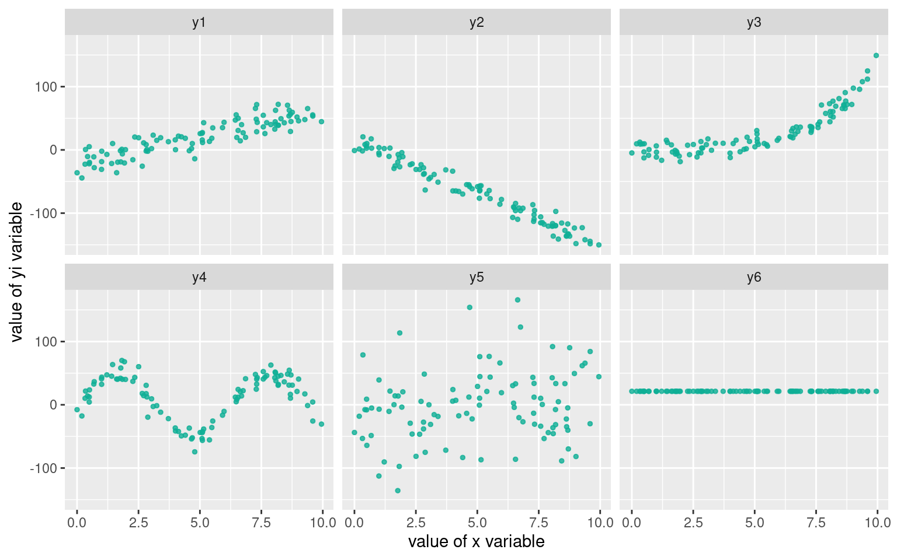
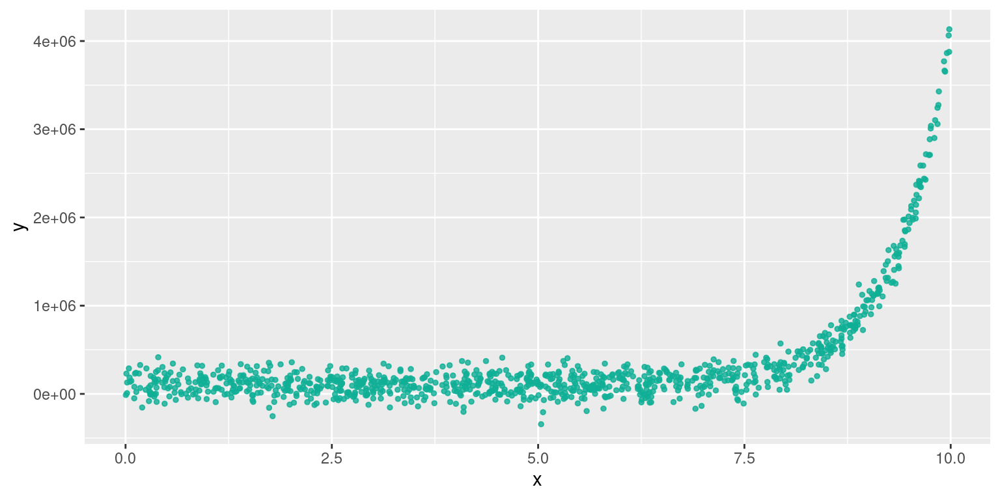
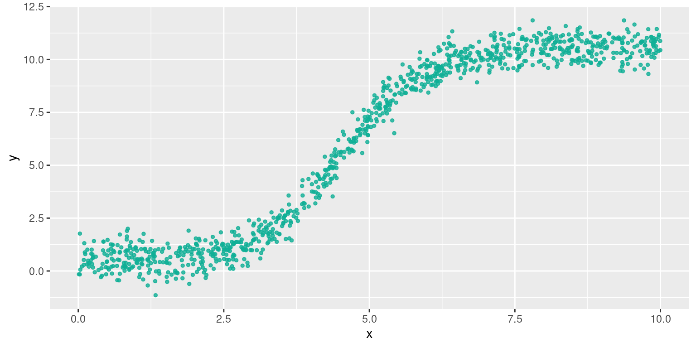

Analyse Bivariée
M2 IGAST
2020-2021
Introduction & Rappels
Sources et Reférences
- Ce cours reprend le cheminement du cours M2 IGAST 2017 d'Élodie Buard
- R et espace https://framabook.org/r-et-espace/
- Probabilités, analyse de données et statistiques , Gilbert Saporta, Editions TECHNIP, 2011
- Nombreuses ressources en ligne : http://www.foad-mooc.auf.org/IMG/pdf/424B_-Application_des_methodes_statistiques_d_analyse.pdf
- et wikipedia !
Rappel : Deux familles statistiques
Statistiques inférentielles
Pour répondre à la question : «A partir d'un échantillon , que peut-on attendre (inférer) de la population ?»
- Modèles, estimateurs, ... : régression, estimation, extrapolation
- Liaisons statistiques : corrélation, covariance
- test statistiques, notions de probabilités
- e.g. sondages, rencensement, intervalle de confiance , prédictions, ...
Rappel : Deux familles statistiques
Statistiques descriptives
Pour résumer, synthétiser, rendre intelligible, les propriétés d'une population à partir des variables qui décrivent les individus et la répartition de leurs valeurs.
- Graphiques (histogrammes, boxplots, )
- Mesures (fréquences , distributions , moments)
- classification, ACP,...
Rappel : Vocabulaire
Population : Ensemble d'individus
"données", "corpus", "échantillon", "data"
Individu : Unité statistique élémentaire = «les lignes du tableau»
Variables : Caractéristiques, propriétés d’un individu, mesurées par des enquêtes, des observations,... = «les colonnes du tableau»
L'objet du cours : l' Analyse Bivariée
Objectif : Analyser le lien entre deux variables, par exemple :
lien entre deux variables quantitatives
"nombre d'habitants et nombre de lignes de bus par département"
"nombre de lignes de bus en 1998 et en 2018"
lien entre deux variables qualitatives
"couleur des yeux et port de lunettes"
lien entre une variable quantitative, une variable qualitative
"taille et couleur des yeux"
Mise en garde
Une liaison, même très forte, entre deux variables, n'indique pas la causalité! ⚠
Erreur très courrante, très tentante.

© TylerVigen http://tylervigen.com/spurious-correlations
Analyse bivariée avec des données spatiales
Données spatiales
- Individus restreints spatialement (selection spatiale)
- variables "géographique " (e.g. lieu de résidence) renseignées pour les individus
prise en compte des distances ? \(\rightarrow\) modèle gravitaire
Données localisées
- Auto-corrélation spatiale (Moran's I)
- Geographicaly Weightd Regression (GWR) \(\approx\) regression linéaire avec prise en compte de la distance entre individus
Régression linéaire
Première étape
Toujours en premier: Regarder l'aspect des données avec des graphiques ("exploration visuelle")
data(iris)
plot(iris)
Existe-t-il un lien entre des variables ?
Diverses formes des dépendances

En pratique les formes sont beaucoup moins régulières.
Les étapes
- Tracer le nuage de points
- Existe-t-il une relation ?
- Est-elle de forme linéaire ? De quel sens ?
- Si la liaison est de forme linéaire \(\rightarrow\) faire une régression
- Si la liaison est non linéaire, est-elle monotone ? De forme connue ?\(\rightarrow\) Proposer un modèle
5bis. Réaliser un modèle LOESS avec prudence (uniquement descriptif , aucun pouvoir de généralisation)
cf le blog de Lise Vaudor [http://perso.ens-lyon.fr/lise.vaudor/regression-loess/]
Régression linéaire
Si la forme du nuage de points s'y prête, on peut faire une régression linéaire (aussi appelé ajustement linéaire).
On cherche la droite qui «passe au mieux» (=ajustée) dans le nuage de points de deux variables quantitatives \(V_1\) et \(V_2\), qui permet de vsiualiser:
- l'intensité du lien / de la dépendance : points proche de la droite ou non ?
- la forme de la dépendance : linéaire ou non ?
- le sens de la dépendance : nulle, positive ou négative ?
Régression linéaire

«Droite qui passe au mieux» = qui minimise la somme des écarts quadratiques entre la droite et les points du nuage.
Régression linéaire : le modèle
L'équation de la droite est un modèle linéaire de la relation statistique qui lie \(V_1\) et \(V_2\);
Ici le modèle est : \(\hat{V_2}=aV_1+b\)
Si la régression linéaire est avérée, alors pour un individu \(i\) dont on connait \(V1_i\), on infère la valeur \(V2_i\) par le modèle : \(\hat{V_{2i}} = aV_{1i} +b\)
On dit aussi que \(V_1\) explique \(V_2\) , ou que le modèle prédit \(V_2\) à partir de \(V_1\) (on note les valeurs prédites \(\hat{V_2}\))
La grande question
Comment déterminer qu'une régression linéaire est «correcte» ?
le \(R^2\)
\(R^2 \in [0;1]\) , c'est le coefficient de détermination linéaire.
Donne la qualité de prédiction de la régression.
"Proche de 1"" \(\equiv\) "très bonne qualité"
C'est le pourcentage de "variation" de \(V_2\) due à la "variation" de \(V_1\)
le \(R^2\)
défini par : \(R^2 = 1 - \frac{\sum_{i=1}^{n} (y_i - \hat{y})^2}{\sum_{i=1}^{n} (y_i - \bar{y})^2}\)
si on note \(\hat{V_2}\) les valeurs de \(V_2\) prédite par le modèle linéaire, alors:
\(R^2=cor(\hat{V_2},V_2)^2\)
(au sens de la corrélation de Pearson)
la p-value
Elle peut s'interpréter comme «la probabilité d'avoir un résultat de regression identique avec deux variables véritablement indépendantes»
La p-value est associée à la notion d'hypothèses nulle. Ici , l'hypothèse nulle est "les deux séries sont indépendantes".
la p-value
Plus grossièrement : la p-value est le pourcentage de chances de se tromper en rejetant l'hypothèse nulle,
c'est à dire
se tromper en considérant que les deux séries ne sont pas indépendantes et qu'il existe une relation entre les deux (ici, linéaire car nous testons un modèle linéaire).
l'Hypothèse nulle
\(H_0\) : «les deux variables sont indépendantes»
- conserver \(H_0\) : considérer les deux variables comme indépendantes
- rejeter \(H_0\) : considérer les deux variables comme dépendantes = ayant une relation statistique, un lien.
Format des resultats donnés par avec R
regression <- lm(iris$Petal.Length~iris$Petal.Width)
summary(regression)##
## Call:
## lm(formula = iris$Petal.Length ~ iris$Petal.Width)
##
## Residuals:
## Min 1Q Median 3Q Max
## -1.33542 -0.30347 -0.02955 0.25776 1.39453
##
## Coefficients:
## Estimate Std. Error t value Pr(>|t|)
## (Intercept) 1.08356 0.07297 14.85 <2e-16 ***
## iris$Petal.Width 2.22994 0.05140 43.39 <2e-16 ***
## ---
## Signif. codes: 0 '***' 0.001 '**' 0.01 '*' 0.05 '.' 0.1 ' ' 1
##
## Residual standard error: 0.4782 on 148 degrees of freedom
## Multiple R-squared: 0.9271, Adjusted R-squared: 0.9266
## F-statistic: 1882 on 1 and 148 DF, p-value: < 2.2e-16Distribution des résidus, coefficients du modèle ajusté et leur p-value associée (ici sur un test de Student, notée Pr(>|t|) et \(R^2\))
Bonus: Critères de significativité du lien linéaire
Les résidus \(\epsilon_i\) (écart entre valeur observée et valeur prédite (\(V_2 - \hat{V_2}\)) par le modèle pour l'individu \(i\)) doivent:
- être indépendants : covariance nulle ou très faible \(cov(x_i, \epsilon_i) = 0\)
- être distribués selon un loi normale de moyenne nulle \(\epsilon \sim \mathscr{N}(0,\sigma_{\epsilon})\)
- être distribués de façon homogène (homoscédasticité), i.e. de variance constante \(var(\epsilon_i)=\sigma_{\epsilon}^2\) , indépendante de l'observation
Bonus: Evaluation de l'indépendance des résidus avec R
Graphique de la fonction acf:
Si une barre exceptée la première dépasse la ligne en pointillés, on peut remettre en cause l'indépendance des résidus. Ici, c'est le cas.
modele1 <- lm(iris$Petal.Length~ iris$Petal.Width)
acf(residuals(modele1))
Bonus:Les 4 graphiques résultats de la fonction lm
La fonction lm de R et ses résultats permettent de tracer 4 graphiques pour évaluer certains des critères de significativité.
modele1 <- lm(iris$Petal.Length~ iris$Petal.Width)
par(mfrow=c(2,2)) # pour avoir une matrice de graphes
plot(modele1)Bonus: Évaluer l'homogénéité des résidus avec R
Premier graphique : pour vérifier que le nuage de points est homogène (e.g. pas de relation non-linéaire entre résidus et valeurs prédites)
Une éventuelle relation non-linéaire pourrait se retrouver dans les résidus(Ici : légère structure parabolique )
modele1 <- lm(iris$Petal.Length~ iris$Petal.Width)
plot(modele1,1)Bonus: Evaluer la normalité de la distribution des résidus avec R
Le deuxième graphique "Q-Q plot" : pour vérifier l'hypothèse de normalité des résidus, les points doivent être proches de la bissectrice
modele1 <- lm(iris$Petal.Length~ iris$Petal.Width)
plot(modele1,2)
Bonus: Evaluer l'homoscédasticité des résidus
Le troisème graphique "Scale location" : si les résidus sont distribués de façon homogène suivant les valeurs "fittées", alors la droite est plutôt horizontale et les points sont disposés de façon homogène autour.
modele1 <- lm(iris$Petal.Length~ iris$Petal.Width)
plot(modele1,3)Ici: légère pente mais les points sont distribués de façon relativement homogène autour de la droite.
Corrélation de deux variables quantitatives
Corrélation (linéaire)
Dans le cas d'une liaison statistique linéaire entre deux variables, on peut calculer l'«intensité» de ce lien sans nécessairement trouver les coefficients modèle linéaire : c'est la corrélation
\(cor(x,y) \in [-1;1]\) entre deux variables \(x\) et \(y\) .
- +1 : les deux variables croissent ou décroissent conjointement
- -1 : quand l'une des variables croît, l'autre décroît.
- 0 : pas de relation linéaire entre les deux variables
R donne le coefficient de Pearson par defaut, l'argument method de la fonction cor() permet de spécifier deux autres coefficients : Kendall et Spearman.
Test de corrélation entre deux variables avec R
Version plus complète : c'est un test, on a plusieurs indicateurs statistiques sur ce test, notamment la p-value et l'intervalle de confiance
cor.test(iris$Petal.Length, iris$Petal.Width)##
## Pearson's product-moment correlation
##
## data: iris$Petal.Length and iris$Petal.Width
## t = 43.387, df = 148, p-value < 2.2e-16
## alternative hypothesis: true correlation is not equal to 0
## 95 percent confidence interval:
## 0.9490525 0.9729853
## sample estimates:
## cor
## 0.9628654Rappel : la p-value quantifie la significativité du test. En général, on considère le test significatif si elle est en dessous de 5%, soit 0.05.
Calcul direct du coefficient de corrélation
Soient deux variables \(V_1\) et \(V_2\)
Le coefficient de corrélation \(r\) de \(V_1\) et \(V_2\) est la normalisation de la covariance par le produit des écart-types des variables
\(r= \frac{cov(V_1,V_2)}{\sigma_{V_1}\sigma_{V_2}}\)
La covariance est la moyenne du produit des écarts à la moyenne
\(cov(V_1,V_2)= E[(V_1-E[V_1])(V_2-E[V_2])]\)
Matrice de corrélations
cor(iris[,1:4])## Sepal.Length Sepal.Width Petal.Length Petal.Width
## Sepal.Length 1.0000000 -0.1175698 0.8717538 0.8179411
## Sepal.Width -0.1175698 1.0000000 -0.4284401 -0.3661259
## Petal.Length 0.8717538 -0.4284401 1.0000000 0.9628654
## Petal.Width 0.8179411 -0.3661259 0.9628654 1.0000000Présentation des corrélations entre les variables quantitatives d'un tableau, pour tous les couples de variables.
La matrice de corrélation est symétrique, et sa diagonale est constituée de 1.
Sensibilité aux 'outliers'
X <- c(3,2,3,4,1,2,3,4,5,2,3,4,3)
Y <- c(1,2,2,2,3,3,3,3,3,4,4,4,5)
plot(X, Y, xlim = c(0,16), ylim= c(0,16))cor.test(X,Y)$estimate## cor
## 0Sensibilité aux 'outliers'
X <- c(3,2,3,4,1,2,3,4,5,2,3,4,3,15)
Y <- c(1,2,2,2,3,3,3,3,3,4,4,4,5,15)
plot(X, Y, xlim = c(0,16), ylim= c(0,16))cor.test(X,Y)$estimate## cor
## 0.9052224Sensibilité aux 'outliers'
Outlier : observation "anormale", par sa valeur extrème , comparée aux autres.
La corrélation et la régression linéaire sont très sensibles aux outliers.
\(\rightarrow\) s'interroger sur la nécessité de nettoyer/filter les données et des conséquences
Régression linéaire avec R
Regression linéaire avec R
Fonction lm() , modèle de la forme Variable_a_expliquer ~ Variable_explicative
my_model <- lm(Petal.Width~Petal.Length, data=iris)
summary(my_model)##
## Call:
## lm(formula = Petal.Width ~ Petal.Length, data = iris)
##
## Residuals:
## Min 1Q Median 3Q Max
## -0.56515 -0.12358 -0.01898 0.13288 0.64272
##
## Coefficients:
## Estimate Std. Error t value Pr(>|t|)
## (Intercept) -0.363076 0.039762 -9.131 4.7e-16 ***
## Petal.Length 0.415755 0.009582 43.387 < 2e-16 ***
## ---
## Signif. codes: 0 '***' 0.001 '**' 0.01 '*' 0.05 '.' 0.1 ' ' 1
##
## Residual standard error: 0.2065 on 148 degrees of freedom
## Multiple R-squared: 0.9271, Adjusted R-squared: 0.9266
## F-statistic: 1882 on 1 and 148 DF, p-value: < 2.2e-16Que faire lorsque la relation n'est pas linéaire ?
Quand les deux variables sembles corrélées , de façon monotone mais non linéaire,
\(\rightarrow\) Coefficient de Spearman, basé sur le rang des individus.
avec :
\(rg(X_i)\) le rang de \(X_i\) (le classement de sa valeur) dans la distribution de \(X\)
\(n\) le nombre d'individus
Obtenir le coefficient de Spearman avec R
cor.test(iris$Sepal.Length, iris$Sepal.Width, method="spearman", exact = FALSE)##
## Spearman's rank correlation rho
##
## data: iris$Sepal.Length and iris$Sepal.Width
## S = 656283, p-value = 0.04137
## alternative hypothesis: true rho is not equal to 0
## sample estimates:
## rho
## -0.1667777l'argument exact doit être précisé en cas de valeurs ex aequo dans les données.
Utilisation conjointe des coefficients de Pearson et Spearman
\(r\) (Pearson) et \(\rho\) (Spearman) sont deux moyens d'estimer la corrélation: lequel choisir ?
si \(r = \rho\): on garde \(r\) (plus simple à interpréter)
si \(r < \rho\): la relation est non-linéaire : prendre \(\rho\)
si \(r > \rho\): il y a un biais, prendre \(\rho\) (plus robuste)
... et toujours tracer le nuage de points pour examiner la nature de la relation.
"trucs" pour linéariser des relations non-linéaires
Relation log-linéaire

Relation de type \(y=ax^b\)
se linéarise par \(ln(y)=aln(x) + ln(b)\)
Relation géométrique (exponentielle)

Relation de type \(y=e^{ax+b}\)
se linéarise par \(ln(y)=ax + ln(b)\)
Relation logarithmique

Relation de type \(y=a*ln(x)+b\)
\(\rightarrow\) changement de variable
Relation logistique

Relation de type \(y= y_{min} * \frac{y_{max}-y_{min}}{1+e^{ax+b}}\)
se linéarise par \(ln\bigg(\frac{y_{max}-y}{y-y_{min}}\bigg)=ax+b\)
Lien entre deux variables qualitatives
Représentation graphique
Pour deux variables qualitatives, on ne peut pas produire de nuages de points, ni de droite de régression.
\(\rightarrow\) on peut représenter la table de contingence (cf. fonction mosaicplot de R).
Test statistique dit du "Chi 2" ou "Chi carré"
Le test du \(\chi ^2\) est un test d'indépendance, il mesure l'écart, la différence, entre deux distributions de variables qualitatives
Il répond à la question : "Existe-t-il un lien statistique entre deux séries de valeurs qualitatives"
(La réponse est de type OUI/NON , le \(\chi^2\) ne donne pas l'intensité du lien)
Test statistique dit du "Chi 2" ou "Chi carré"
- Hypothèse nulle \(H_0\) : les deux distributions sont indépendantes.
- «faire le test» permet de conserver ou de rejeter cette hypothèse
Principe du Chi 2
- On génère une population théorique à laquelle on va comparer la population observée en considérant leurs distribution.
- Cette distribution théorique reflête ce qui se passerait si on suppose que \(H_0\) est vraie
- Avec cette comparaison, on pourra rejeter ou conserver l'hypothèse nulle.
La construction de cette distribution se fait à partir du tableau de contingence
Tableau de contingence
C'est un tableau à double entrée qui croise deux variables qualitatives.
Dans une case on trouve l'effectif (= le nombre) des individus caractérisés par la conjonction des modalités en ligne et en colonnes.
Exemple sur des formes géométriques de couleurs :
\[\begin{array}{c|c|c} & blanc & noir \\ \hline carré & 22 & 12 \\ \hline rond & 10 & 30 \\ \hline triangle & 26 & 5 \\ \end{array}\]
Dans R : fonction table()
Construction de la distribution théorique.
On commence par sommer les effectifs selon les modalités (en ligne et en colonne)
\[\begin{array}{c|c|c|c} & blanc & noir & \texttt{total}\\ \hline carré & 22 & 12 & 34\\ \hline rond & 10 & 30 & 40 \\ \hline triangle & 26 & 5 & 31\\ \hline \texttt{total} & 58 & 47 & 105 \end{array}\]
On appelle les sommes en lignes et en colonnes sommes marginales, elles sont mises dans les "marges" du tableau.
Construction de la distribution théorique
En divisant par la taille de la population, on obtient les fréquences observées.
\[\begin{array}{c|c|c|c} & blanc & noir & \texttt{total}\\ \hline carré & 0.20952381& 0.11428571 & 0.3238095\\ \hline rond & 0.09523810 & 0.28571429 & 0.3809524 \\ \hline triangle & 0.24761905 & 0.04761905 & 0.2952381\\ \hline \texttt{total} & 0.552381 & 0.447619 & 1 \end{array}\]
On obtient les pourcentages de l'effectif dans les cases du tableau.
C'est également la probabilité , qu'un individu de la population observée soit caractérisé par les modalités en ligne et en colonne.
Construction de la distribution théorique
\[\begin{array}{c|c|c|c} & blanc & noir & \texttt{total}\\ \hline carré & 0.20952381& 0.11428571 & \textbf{0.3238095}\\ \hline rond & 0.09523810 & 0.28571429 & \textbf{0.3809524} \\ \hline triangle & 0.24761905 & 0.04761905 & \textbf{0.2952381}\\ \hline \texttt{total} & \textbf{0.552381} & \textbf{0.447619} & 1 \end{array}\]
De la même façon, les fréquences marginales (marges divisées par la taille de la pop.), donnent la probabilité d'observer un individu de la modalité correspondant à la ligne ou à la colonne considérée.
Exemple : dans cette population , j'ai 29.5% de chances de tirer un triangle, et 55% de chances de tirer une pièce blanche.
Construction de la distribution théorique
Rappel : Probabilité conjointe de deux évènements \(A\) et \(B\) indépendants
\(P(A \cap B) = P(A) \times P(B)\)
À partir des fréquences marginales précédentes, on obtient pour chaque couple de modalités, la probabilité théorique, celle qui suppose \(H_0\), par un simple produit.
Exemple : Si \(H_0\) est vraie, la probabilité d'observer un triangle noir est donnée par:
\(P(triangle \cap noir) = P(triangle) \times P(noir)\)
\(P(triangle \cap noir) =0.447619 \times 0.2952381 = 0.1321542\)
La probabilité théorique d'observer un triangle noir est de 13,2%
Construction de la distribution théorique
On crée un second tableau, dont chaque case vaut le produit des fréquences marginales calculées sur le tableau des observations.
\[\begin{array}{c|c|c|c} & blanc & noir & \texttt{total}\\ \hline carré & 0.1788662 & 0.1449433 & \textbf{0.3238095}\\ \hline rond & 0.2104309 &0.1705215 & \textbf{0.3809524} \\ \hline triangle & 0.1630839 & 0.1321542 & \textbf{0.2952381}\\ \hline \texttt{total} & \textbf{0.552381} & \textbf{0.447619} & 1 \end{array}\]
C'est le tableau des fréquences théoriques.
Tableau des effectifs théoriques
On l'obtient en multipliant les fréquences théoriques par la taille de la population observée (ici 105)
\[\begin{array}{c|c|c} & blanc & noir \\ \hline carré & 18.78095 & 15.21905 \\ \hline rond & 22.09524 & 17.90476 \\ \hline triangle & 17.12381 & 13.87619 \\ \end{array}\]
N.B. Il n'est pas nécessaire d'arrondir les effectifs théoriques
Calcul du Chi 2
C'est la somme, pour chaque case du tableau de contingence (i.e. pour chaque couple de modalités), des écarts carrés entre effectif observé et effectif théorique**, divisés par l'effectif théorique.
Soient \(T^{obs}\) le tableau des effectifs observés, \(T^{theo}\) le tableau des effectifs théoriques,
ici : \(\chi^2 = 26.30329\)
Interprétation du Chi 2
Il faut comparé la valeur du \(\chi^2\) calculée avec la valeur critique qu'on trouve dans une table de loi de Student (ou table de loi du chi 2).
C'est un tableau à double entrée : une valeur de quantile, et un degré de liberté.
On peut considérer que la valeur de quantile est le pourcentage d'erreur qu'on s'autorise de faire. On prend souvent 5% : la colonne 1-0.05 = 0.95
Le degré de liberté est obtenu en calculant la valeur \((nb\_lignes - 1)*(nb\_colonnes -1)\).
Dans notre exemple , le degré de liberté est 2*1 = 2
Table de loi de Student

Interprétation du Chi 2
D'après le tableau de la loi de Student , la valeur critique pour un test avec 5% de chances de se tromper est un degré de liberté de 2 vaut 4.303.
Si la valeur calculée du \(\chi^2\) est supérieure à la valeur critique, on rejette \(H_0\).
Pour notre exemple: On rejette \(H_0\), i.e. les deux variables sont dépendantes, car \(\chi ^2 \approx 26 > 4.303\)
Interprétation: «la forme est liée à la couleur dans cette population, nous pouvons l'affirmer avec un risque d'erreur d'au moins 5%»
Les étapes du \(\chi ^2\)
- Tableau de contingence
- Sommes marginales
- Calcul des fréquences observées
- Calcul des fréquences théoriques
- Tableau d'effectifs théoriques
- Calcul de la valeur du test
- Comparaison avec les valeurs de la table de Student
Lien entre une variable qualitative et une variable quantitative.
Représentation graphique.
Pas de moyen simple de calculer le lien entre une variable qualitative et une variable quantitative.
- corrélation de rang
- régression logistique
- analyse de la variance (ANOVA)
\(\implies\) Alors on fait un graphique !
La variable qualitative sert de catégorie, on fait varier la représentation graphique de la variable quantitative suivant cette catégorie.
2 possibilités :
- boîtes à moustaches
- superposition d' histogrammes / densités
Les boîtes à moustaches
"Boîte à moustaches", aussi appellées "boxplot", montre les quartiles d'une variable
Quartile = «quantile de 4», valeurs qui séparent une variable quantitative en quarts, i.e. paquets d'un quart de l'effectif
- Premier quartile : sépare les 25% inférieurs des valeurs
- Second quartile : mediane, sépare les 50% inférieurs des valeurs
- troisième quartile : sépare les 75% inférieurs des valeurs
Dans R, fonction quantile
Boxplot et Distribution
Boxplot par catégories
Principe : on trace un boxplot par modalité de la variable qualitative.
E.g. : consommation de véhicules par type (dataset mpg de R)

Références supplémentaires
Refs
Cours complet sur les modèles linéaires : [https://www.math.univ-toulouse.fr/~barthe/M1modlin/poly.pdf]
Interprétation des graphique de lm en R : [https://data.library.virginia.edu/diagnostic-plots/]
Comment evaluer la "validité" du modèle linaire ?
En pratique, il faut réunir deux critères :